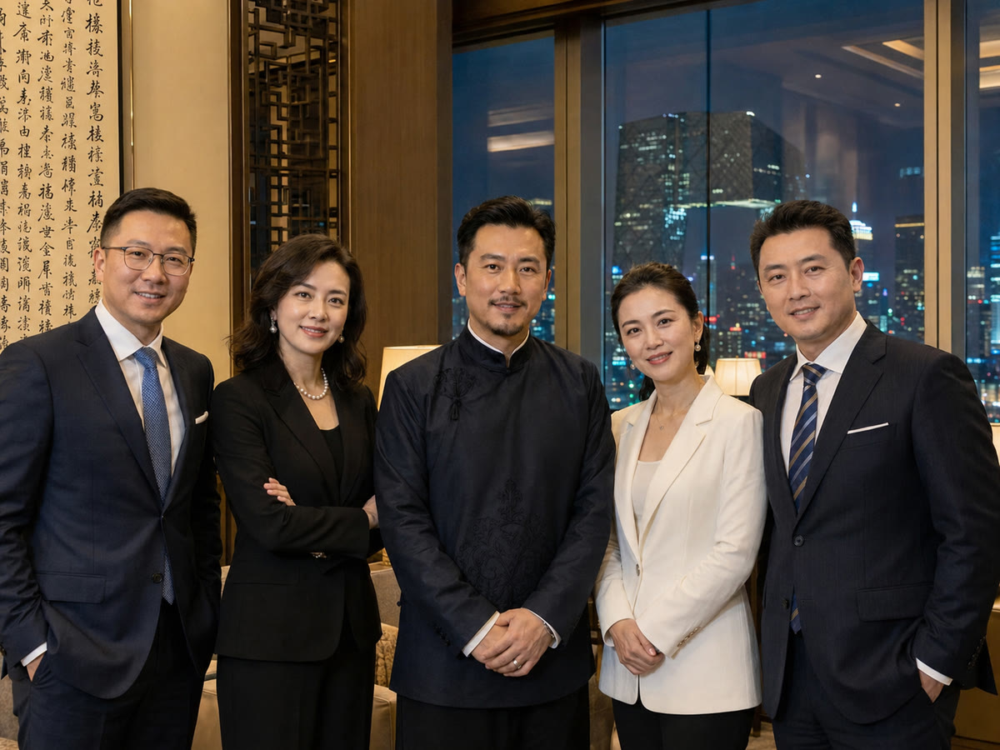

Move, stay or wait?
Assess a job offer, promotion, career change, business launch or relocation—and whether the present moment calls for action, patience or preparation.
Taoist Metaphysics · Professional Qimen Dunjia Readings
Qimen Dunjia examines timing, position, people and events as one living situation. Mingheng offers focused readings for career, wealth, relationships, business and major life decisions—clarifying present dynamics, likely direction, critical timing and practical ways forward.
I
THE PURPOSE OF QIMEN
Professional Qimen analysis does more than deliver a verdict. It explains why circumstances have taken their present form, where resistance lies, when action is better timed, and which choices may reduce avoidable risk.
ONE MATTER · ONE CHART
When choices are uncertain, events repeat or the path ahead is unclear, a focused question can reveal the decisive relationships between people, circumstances and timing.
Assess a job offer, promotion, career change, business launch or relocation—and whether the present moment calls for action, patience or preparation.
Examine investments, receivables, partnerships and funding decisions, including obstacles, timing and prudent exit boundaries.
Understand the current dynamic, likely development, recurring conflict and realistic prospects for commitment or reconciliation.
Evaluate projects, negotiations, key hires, partnerships and major operating decisions through timing and situational structure.
PROFESSIONAL READING AREAS
From one immediate question to long-term life direction; from personal choices to business strategy.
A Qimen chart for one real and specific matter, covering the current situation, people involved, likely direction, success factors and timing for action.
A broader reading of temperament, strengths, career direction, wealth pattern, relationships, major life phases and priorities for the coming year.
Analysis for employment, promotion, transition, entrepreneurship, investments, payment recovery and significant financial choices.
Insight into both parties’ present states, relationship trajectory, marital tensions, reconciliation prospects and practical areas for improvement.
Selection of favorable timing for contracts, openings, relocation, travel and negotiations, with directional guidance for homes and workplaces.
Focused situational analysis for founders, executives and investors considering partnerships, financing, hiring, negotiations and project execution.
WHAT MAY BE ASKED
Each area below can be examined through a genuine, specific and properly framed question.
THE MINGHENG METHOD
A chart is formed from the time, context and subject of the enquiry. The Nine Palaces, Eight Gates, Nine Stars, Eight Spirits and their relationships are then interpreted as one coherent situation.
Reduce a broad concern to the real decision or uncertainty that needs to be understood.
Record the time, context and essential facts of the enquiry to establish the Qimen configuration.
Examine position, strength, interaction and the roles of the people and conditions involved.
Identify the present state, likely development, decisive factors and meaningful timing windows.
Translate the reading into priorities, timing, direction and clear boundaries for action.
READING SERVICES
The question and required information are confirmed before a formal reading begins.
QUICK READING
¥399 / reading
For one clearly bounded question with a straightforward background.
IN-DEPTH READING
¥999 / matter
For career, wealth, relationships, projects and major choices.
LIFE DIRECTION
¥1,680 / reading
A structured view of career, wealth, relationships and life phases.
TIMING & SPACE
¥3,800 and above
For homes, offices, shops and the timing of important events.
LIMITED ANNUAL SERVICE
Ongoing situational guidance for founders, executives and investors navigating partnerships, team changes, operating decisions and major personal milestones.

ABOUT THE TEAM
Mingheng is a professional consultation team focused on the study and practical application of traditional Chinese metaphysics, particularly Qimen Dunjia. The team applies Qimen Dunjia, destiny analysis and traditional concepts of time and space to questions involving career, wealth, relationships, business and major life decisions.
The team respects both the discipline of the tradition and the realities of each client's circumstances. Every reading is independently considered around a specific question. Rather than simply labeling an outcome as favorable or unfavorable, the team explains the situation, timing and risks to support a more considered choice.
“Method reveals the pattern; judgment guides the response. Know when to act—and when to stop.”
READING PRINCIPLES
One matter, one chart. A genuine and clearly framed question produces the most coherent analysis.
No fear-based practice. Illness, disaster, death or relationship loss will never be used to create anxiety.
No guaranteed outcomes. No promise is made to change destiny, produce wealth, restore a relationship or cure illness.
Professional boundaries matter. Medical, legal and investment matters also require qualified professional advice.
Confidentiality is essential. Birth details, family matters, addresses and commercial information are treated as private.
BOOK A READING
Submit the single matter you most want to understand. Mingheng will first assess whether it is suitable for a reading, then confirm the service and timing.